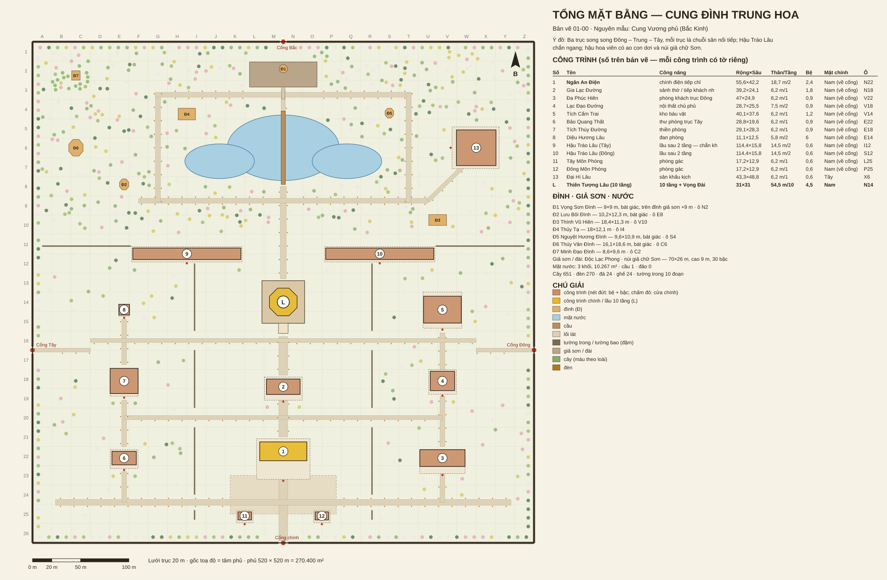
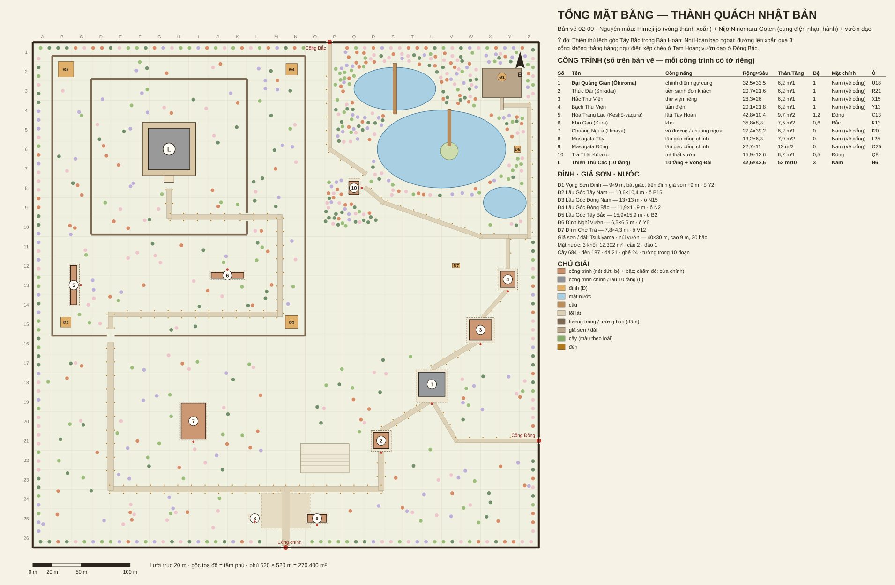
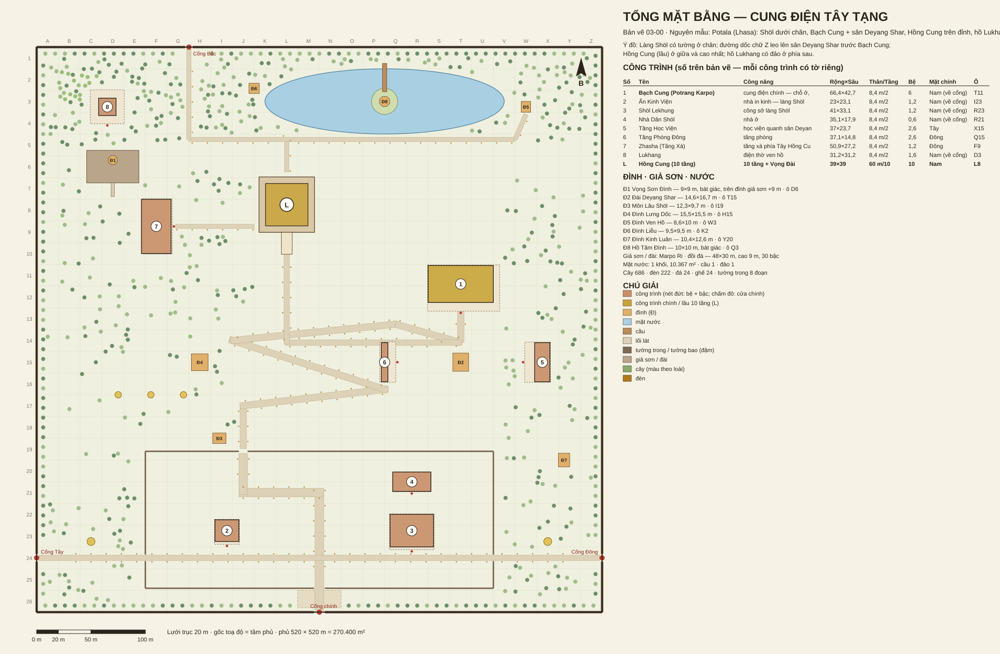
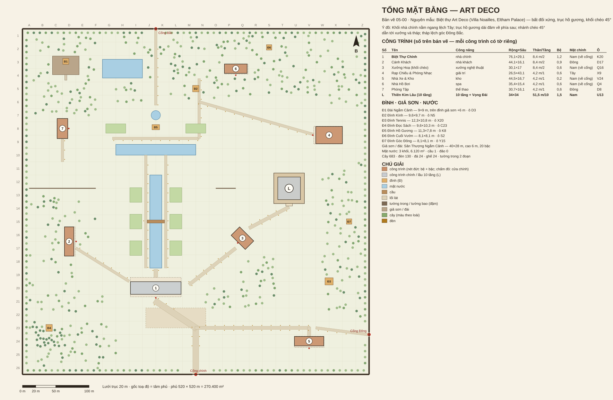

Sinh từ số liệu dựng (src/game/tienphu/siteplans.js) — node scripts/draw-tienphu.mjs
Cung Vương phủ (Bắc Kinh)

Himeji-jō (vòng thành xoắn) + Nijō Ninomaru Goten (cung điện nhạn hành) + vườn dạo

Potala (Lhasa): Shöl dưới chân, Bạch Cung + sân Deyang Shar, Hồng Cung trên đỉnh, hồ Lukhang phía sau

Beaumaris Castle (thành đồng tâm, Wales)
Biệt thự Art Deco (Villa Noailles, Eltham Palace) — bất đối xứng, trục hồ gương, khối chéo 45°

Versailles: lâu đài chữ U + sân danh dự, parterre, Latona, Thảm Cỏ Xanh, Đại Kênh chữ thập, bosquet, Trianon

Hoàng Thành Huế: Ngọ Môn, hồ Thái Dịch + cầu Trung Đạo, Thái Hòa, Tử Cấm Thành, Thế Miếu, Diên Thọ, Ngự Uyển

Đại Cung điện Bangkok: Wat Phra Kaew góc Đông Bắc, Ngoại triều, Trung điện (Chakri, Dusit), Nội cung

Taj Mahal (Agra): Jilaukhana, Đại Môn, charbagh 4 phần, lăng ở cuối trên bệ ven sông, Thánh đường + Jawab